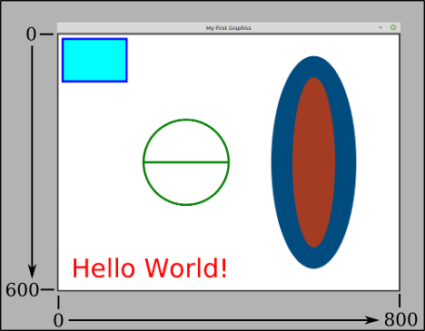

CS 124, Fall 2021
Lab 2: Using Subroutines
In this lab, you will use subroutines that have already been written for you, so that all you have to do is call them. A subroutine performs some task or computes some value. If you can call a pre-defined subroutine to perform the task or compute the value, you don't need to know how to do it yourself! Building on the work of others—or on your own work—is a central idea in computer programming.
To start, you need to copy several files into your account. You can get them with one command in Linux. Change into the directory where you work on Java. (Just use the command cd cs124 when you log in, if you made a cs124 directory in your home directory in the previous lab.) Then, use the following command to copy the files that you need:
cp -r /classes/cs124_Eck/lab2-files .
There is a space and a period at the end of the command. Remember that the period is a name for the directory that you are working in. You can then do cd lab2-files to change into the lab2-files directory. You can do all of your work for the lab in that directory. (Change the name to "lab2" if you want.) Another way to copy the folder is to use the GUI: Open a file browser window and navigate to the /classes/cs124_Eck folder. Copy the lab2-files folder, and then paste it into a file browser window showing your cs124 folder. (Alternatively, you could grab the files from the web, using this link; be sure to get TextIO.java, and put it in a folder named textio.)
When you finish the lab, all of the files that you create should be in your lab2-files directory. To turn in your work, you should copy that directory into your homework folder, either using the GUI or using a command like
cp -r lab2-files /classes/cs124_Eck/homework/YourLastName
When you give this command, you must be working in the directory that contains the lab2-files directory.
Your work for this lab is due at the start of lab next Tuesday.
Some Style Rules
Read this section before turning in your work for this lab, and make sure your programs follow the style rules before you turn them in.
Starting with this week's lab, your grade will be based partly on program style. When you write a program, it's important to follow rules of good programming style. These rules are mostly for human readers, not for the computer, and therefore the computer won't give you any feedback about them when you compile or run the program. So it's up to you to make sure that your programs show good style. Here are some of the rules that I expect all of your programs to follow:
- Use indentation to show the structure of the program. For example, indent the main routine inside the class, and indent the statements inside the main routine. Each level of indentation should be 3 or 4 spaces.
- Use spaces and blank lines to make the program easier on the eyes. For example, it's a good idea to always put spaces around the "=" in an assignment statement. And it's a good idea to put blank lines before and after the main routine, and possibly between sections of the main routine that perform different tasks.
- You should declare just one variable per line (or, in some cases two or three closely related variables).
- Almost every variable declaration should have a comment to explain the purpose
of the variable in the program. These are generally one-line comments, starting
with
//, on the same line as the variable declaration. These comments should describe the purpose of the variable and/or how it is used in the program. - Every variable name should begin with a lower case letter. If the name consists of
several words, each word after the first should be capitalized. For example:
myInterestRate. - Names of variables and programs should be meaningful whenever possible.
InterestCalculatorandmyInterestRateare meaningful names.MyClass,IC, andxare not. - Use appropriate types. For example, a variable that is naturally an integer should have
type
int, not typedouble. - There should be a multiline comment for the program as a whole that explains the purpose of
the class and, when appropriate, how to use it. This comment goes at the beginning of the java
file, just before
public class.... Multiline comments are enclosed between /* and */. - Do not write excessively long lines. Lines should be really limited to 100 characters (although it's hard not to creep above that at times).
- When doing input/output, you should generally prompt the user for inputs, and you should label the outputs. The user must be able to understand what is going on. Include appropriate spaces in your prompts and labels. For example, an output such as "The answer is27" is ugly. The output should be "The answer is 27", with a space between "is" and "27".
Exercise 1: A Conversation With The User
For your first assignment, you will write a program that will hold a conversation with the user. Start with the file named Conversation.java, from the lab2-files folder, which already implements a very short conversation. You will edit the main() routine to produce a longer, more interesting conversation.
This program uses the class TextIO to read the user's input. TextIO is not a standard part of Java, so it has to be made available to your program. The file that defines it, TextIO.java is in the textio folder inside the lab2-files folder. The textio folder has to be in the same the directory with the program that uses TextIO. And the program has to have the command
import textio.TextIO;
at the start. All this is already set up for the program Conversation.java. TextIO is discussed in more detail in Section 2.4, but you will only need three functions from the TextIO class in this lab:
- TextIO.getln() — When the computer executes this function, it reads one
line of text from the user. The full line of text is returned to the program as
a String, which you can assign to a variable of type String.
An example is the assignment statement
name = TextIO.getln()in the conversation program. - TextIO.getlnInt() — When the computer executes this function, it reads one number of type int from the user, which you can assign to a variable of type int. If the user happens to type extra stuff on the same line after the integer, it is discarded.
- TextIO.getlnDouble() — When the computer executes this function, it reads one number of type double from the user, which you can assign to a variable of type double. If the user happens to type extra stuff on the same line after the real number, it is discarded.
For this exercise, you should use TextIO to implement a conversation between the computer and the user of the program. The topic and the structure of the conversation are up to you. Minimum requirements are: You should ask the user at least four questions (and read the user's responses), in addition to asking the user's name. More questions would be even better! Some of the responses should be numbers, and you should do at least two calculations using the input numbers. (For example, you could ask what year the user was born and have the computer compute the user's age.) At least one of the responses should be a string, such as the user's favorite color. You should use the user's inputs somehow in your outputs. (For example, if the user says their favorite color is blue, then the program might output "How about that, Fred, blue is my favorite color too.")
Your grade will be partly based on how ambitious the program is and how natural and interesting the conversation is. Feel free to be amusing, obnoxious, philosophical, pedagogical, mathematical, or whatever. Don't forget that you have to do two computations with the user's input! A conversation might go something like this:
Hi, my name is Kirk. What's your name? Spock Gee, Spock is a funny name. Say, you look young to be a StarFleet Science officer. How many years old are you? 187 Let's see, this is the year 2471, so you must have been born in 2284. That was a good year. . . .
But you're not required to duplicate this conversation. The assignment is to make up your own!
Exercise 2: Timed Typing
The function System.nanoTime() returns the number of nanoseconds that have elapsed since a certain time in the past. (When that certain time was is irrelevant.) A nanosecond is one one-billionth of a second. This function can be used to find the number of nanoseconds between two events in a program:
double startTime, endTime; double elapsedTimeInSeconds; startTime = System.nanoTime(); . . // do something . endTime = System.nanoTime(); elapsedTimeInSeconds = ( endTime - startTime ) / 1000000000;
Write a program named TypingSpeed that lets the user type in a line of text and times how long it takes to type it. Then report the time, in seconds, and also report the number of characters per second that the user typed. A run of the program might look like this, where the user typed in the second line:
Type a line of text, and press return: A man, a plan, a canal. Panama! You typed "A man, a plan, a canal. Panama!". That's 31 characters, in 8.678162827 seconds, so you typed 3.572184645297391 characters per second.
Remember that if you have a String variable, such as line for example, then line.length() is a function that tells how many characters are contained in the line.
The program can use the function TextIO.getln() to read the user's line of input. Remember to put import textio.TextIO; at the start of the program!
The name of the class should be TypingSpeed, and therefore the Java file that defines the class should be TypingSpeed.java
Exercise 3: Using String Manipulation Functions
We have seen that strings are objects and that they come with functions that operate on the string. All the functions that you need can be found in Section 2.3.3.
Write a program named MyName that gets the user's name and then does the calculations and shows the outputs specified below. The program can use TextIO.getln() to read the user's name, but the main point of the program is to use some string functions.
The program should ask for the user's full name (first name and last name, separated by a space).
It should use TextIO.getln()
to read the answer into a variable of type String. You should assume that
the user enters a reasonable response. (If they don't, the program can
crash, but that's OK—it's the user's fault, not yours.)
Once you have the user's name, use string functions to do the following computations with the string, and display the results (with appropriate labeling):
- Tell the user how many characters there are in the name.
- Print a copy of the name with all the letters in upper case. (You only need one String function to do this!)
- Extract the user's first name and last name into two new variables. (Find the index of the space character that separates the names, and use the substring functions to get the two pieces of the string. We did an example like this in class.) Output the user's first name and last name on separate lines.
- Output the user's initials (the first letter of the first name and the first letter of the last name). The first letter of the last name is just the character that follows the space in the input string.
When the user runs the program, it should work more or less as follows, where the user in this example types in their name as "James Kirk":
Hi! Please tell me your name. Type in your first name and last name, separated by a space: James Kirk Your full name contains 10 characters Your name in uppercase letters is JAMES KIRK Your first name is James Your last name is Kirk Your initials are JK
Feel free to modify the format, but you should at least output the required information.
The name of the class should be MyName, and therefore the Java file that defines the class should be MyName.java
Exercise 4 Introduction to JavaFX Graphics
In the last part of the lab, you will get your first taste of GUI programming. At this point in the course, the only thing that you know how to do is to write a "once-through" list of instructions that is executed from beginning to end — but you can do anything with those instructions, as long as you have access to the right subroutines. In this part of the lab, you will use some drawing subroutines that are part of the "GUI toolkit" named JavaFX.
JavaFX is not really a standard part of Java, and compiling and running JavaFX programs requires modifications to the javac and java commands. On our Linux system, I have defined two new commands that include those modifications. For compiling FirstGraphics.java, use the command jfxc instead of javac, and for running the program, use jfx instead of java. So, the two-step process for compiling and running will be
jfxc FirstGraphics.java jfx FirstGraphics
There is a lot about GUI programming that you won't understand for a while, such as how to open windows and respond to the user's actions. But as far as actually drawing on the screen, it all comes down to a bunch of subroutines for drawing basic geometric shapes. The program FirstGraphics.java has a very simple example of this. Your job for this exercise is to replace the drawing commands in that program with commands that will draw a picture of your own design.
The code that draws the picture is inside a subroutine definition named drawPicture, which looks like this:
public void drawPicture(GraphicsContext g) {
.
. // commands for drawing the picture
.
}
You should ignore everything outside that definition, since you won't understand it at this point. However, what you need to do inside that definition is simply write a list of commands for the computer to execute when the program is run, which is nothing new for you!
Drawing uses (x,y) coordinates, where x goes from zero on
the left to some maximum value at the right, and y goes from zero at the top to some
maximum value at the bottom. The coordinates can be real numbers,
though in practice for this lab, you will probably use integer values for the coordinates.
The maximum values for x and y in FirstGraphics.java are 800 and 600.
(You can probably see how to change those values if you look through the code
outside the drawPicture() subroutine.) The following illustration shows the picture
that is drawn when FirstGraphics is run. The picture is in
the white area. The numbers and arrows show how the coordinates work.
Of course, you can compile and run the program to see the picture at
full size.

You should understand how the code in FirstGraphics.java produced this picture before you try to make your own picture.
For the final exercise of the lab, you should
modify FirstGraphics.java to draw a different picture.
Erase the code inside the drawPicture() routine, and
replace it with your own code. (To start, you might want to comment out the
code instead of erasing it, so you will have it around for reference. Just enclose
it between /* and */. But you should remove the old code before you turn in the program!)
Try to make a picture of some recognizable object, such as a house, a boat, a face, a clock, or a snowman. Maybe use a multicolor background made of two rectangles (representing ground and sky). Add some detail, like a cloud or some stars (stars could be asterisks, or maybe just little ovals). At a minimum, your picture should use at least a dozen commands and several different colors, and you should draw at least one String. Grade will be based partly on ambition and execution—and maybe a little bit on artistic merit, though I'm not really the one to judge that. (But I don't expect you to spend a huge amount of time on this. Some people in past classes may have gone a little overboard on similar exercises.)
The following subroutines are available for you to use in the
drawPicture() routine:
-
g.setFill(c) is called to set the
color to be used for filling shapes. The parameter,
cis an object belonging to a class named Color. For example, if you want to fill shapes with red, you would say "g.setFill(Color.RED);" before drawing those shapes. The specified color is used for all subsequent fill operations up until the next timeg.setFill()is called. Note that previously drawn shapes are not affected! -
g.setStroke(c) is called to set the color to be used
for stroking shapes. It works similarly to
g.setFill(c). -
g.setLineWidth(w) sets the size of the pen that will be used
for subsequent stroke operations, where
wis measured in pixels. -
g.strokeLine(x1,y1,x2,y2) draws a line from the point with
coordinates
(x1,y1)to the point with coordinates(x2,y2). The width of the line is 1, unless a different line width has been set by callingg.setLineWidth(), and the color is black unless a different color has been set by callingg.setStroke(). -
g.strokeRect(x,y,w,h) draws the outline
of a rectangle with vertical and horizontal sides.
This subroutine draws the outline of the rectangle whose
top-left corner is
xpixels from the left edge of the drawing area andypixels down from the top. The horizontal width of the rectangle iswpixels, and the vertical height ishpixels. Color and line width can be set by callingg.setStroke()andg.setLineWidth()any time before the rectangle is stroked. -
g.fillRect(x,y,w,h) is similar to
g.strokeRect()except that it fills in the inside of the rectangle instead of drawing an outline, and it uses the color set byg.setFill(). -
g.strokeOval(x,y,w,h) draws the outline
of an oval. The oval just fits inside the rectangle that would be drawn by
g.strokeRect(x,y,w,h). To get a circle, use the same value for bothwand forh. -
g.fillOval(x,y,w,h) is similar to
g.strokeOval()except that it fills in the inside of the oval instead of drawing an outline. -
g.setFont( Font.font(N) ) sets the size of the font that
will be used in subsequent calls to
g.fillText()andg.strokeText(). Replace the "N" with the size that you want. (Nis about the height of an upper case letter, in pixels.) ThesetFontmethod is actually more general than this, but this is the only way that we will use it for now. - g.fillText(str,x,y) draws the string str with its lower left corner at the point with coordinates (x,y).
- g.strokeText(str,x,y) draws just the outlines of the characters in str with its lower left corner at the point with coordinates (x,y). This is only really useful if the font is fairly large.
There are many predefined colors for use as the "c" value in g.setFill(c)
and g.setStroke(c), including
Color.BLACK, Color.GRAY,
Color.RED, Color.GREEN, Color.BLUE,
Color.YELLOW, Color.CYAN, Color.MAGNETA,
and many fancier colors such as Color.FUCHSIA and Color.HONEYDEW.
Click this link
for documentation about the Color class, and scroll down just a screen or two for a full list of
color names that you can use. You can also use
g.setFill( Color.color( r, g, b ) );
where r, g, and b are real numbers in the range 0.0 to 1.0. This uses the fact that a color is made up of a combination of various proportions of red, green, and blue. So, you can make any color in this way, if you know the correct proportions. (But see the sample code in FirstGraphics.java for the idea of making a random color.)
There are no predefined fonts, but it is easy to specify fonts of different sizes. For example:
g.setFont( Font.font(15) ); // A smallish font. g.setFont( Font.font(36) ); // A rather big font. g.setFont( Font.font(72) ); // A huge font.